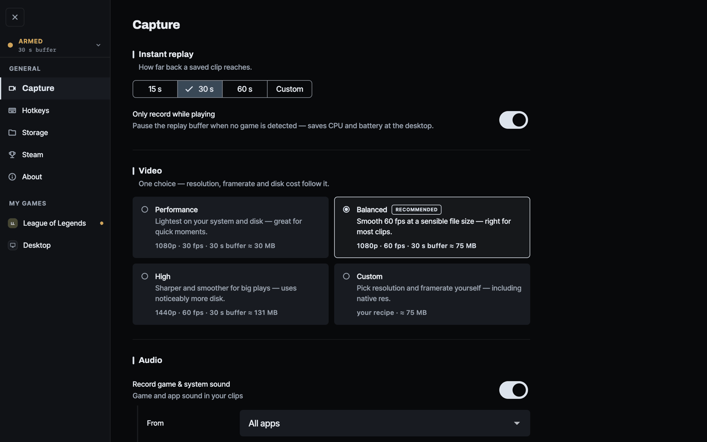

The last 15–60 seconds, in memory
No "start recording" to remember, and no 40 GB of footage you'll never watch. Only what you keep gets written to disk.
Rewind keeps the last 30 seconds of your game in memory, always. Something good happens, you press one key — the clip was already there. Free, open source, and it never leaves your machine.

What it does
No "start recording" to remember, and no 40 GB of footage you'll never watch. Only what you keep gets written to disk.
Get a kill, get a clip. Rewind reads Riot's official local Live Client Data API and saves the moment — only your plays, never anyone else's.
Champion, skin, item build, K/D/A and CS — grouped into the match they came from, so a highlight has context.
Clips are plain video on your disk. Send one to a friend, or don't. Rewind uploads nothing, ever.


Why it exists
NVIDIA Instant Replay, Medal, Outplayed — background recorders that catch what you didn't plan for. On macOS almost none of it exists, and the few tools that do are manual-only, with no idea what's happening in your game. Rewind is one open-source app that does both, on both platforms, built on libobs — the engine behind OBS Studio.
Your data
There is no account, no server, no telemetry, and no monetisation. Rewind makes no calls to Riot's web API and uses no API key.
For League of Legends it reads Riot's official Live Client Data API on
127.0.0.1:2999 — read-only, local to your PC, and built for exactly
this. It uses that to know when you got a kill, and to show your own match
summary: champion, items, K/D/A, CS. Champion and item art come from Riot's public
Data Dragon static data, cached on your disk.
Rewind never reads game memory, never injects into or hooks the game, and never touches network traffic — the things that get accounts banned. A game with no official data source simply gets manual hotkey capture, which is always safe.